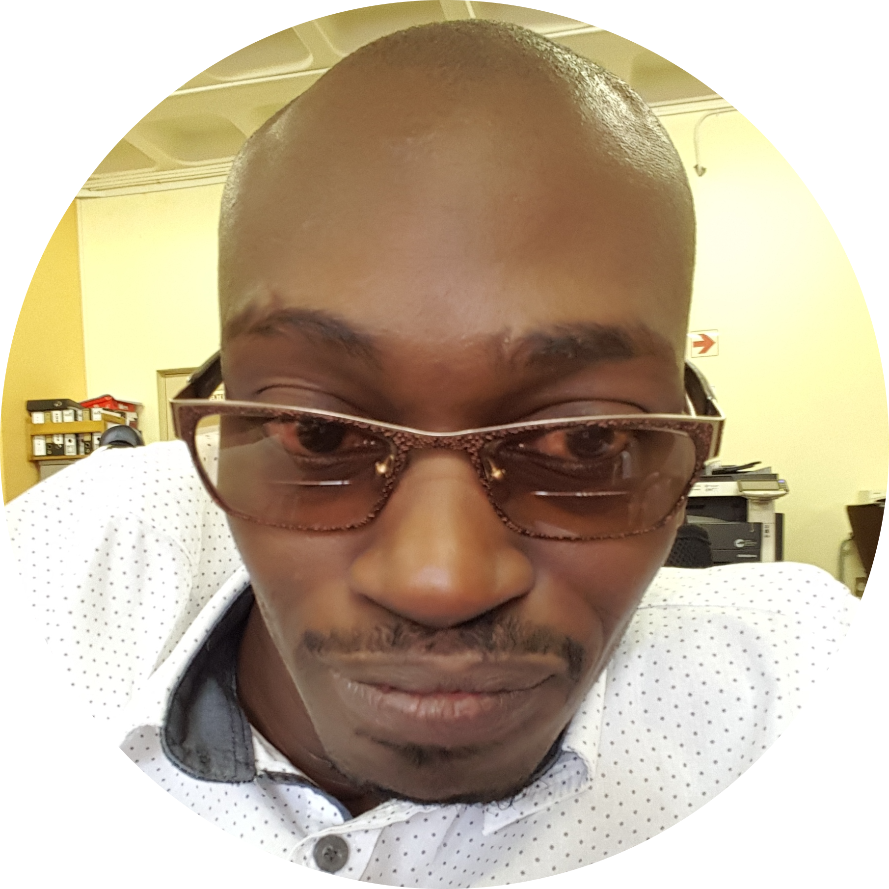

Arnold Twala
Assistant Librarian at University of Limpopo
I'm an aspiring 🎶 Systems Librarian
Welcome to my world!
Hi, I'm Arnold Twala, an assistant librarian, currently studying Full Stack Web Development at HyperionDev. I'm passionate about books, technology, and learning new skills. In this webpage, you'll find out more about my education, work experience. I hope you enjoy browsing through my world and learning more about me.
Education
- Letaba Primary School (1990-1999)
- Filadelphia Secondary School (2000-2005)
- University of Limpopo (2006-2012)
- HyperionDev (2023)
Work Experiance
| Year | Work |
|---|---|
| 2013-2014 | Intern at University of Limpopo Library |
| 2014-2015 | Volunteered at University of Limpopo Library |
| 2016-2023 | Assistant Librarian at University of Limpopo Library |
Skills
- Sierra System
- Microsoft Office
- HTML
- CSS
- JavaScript